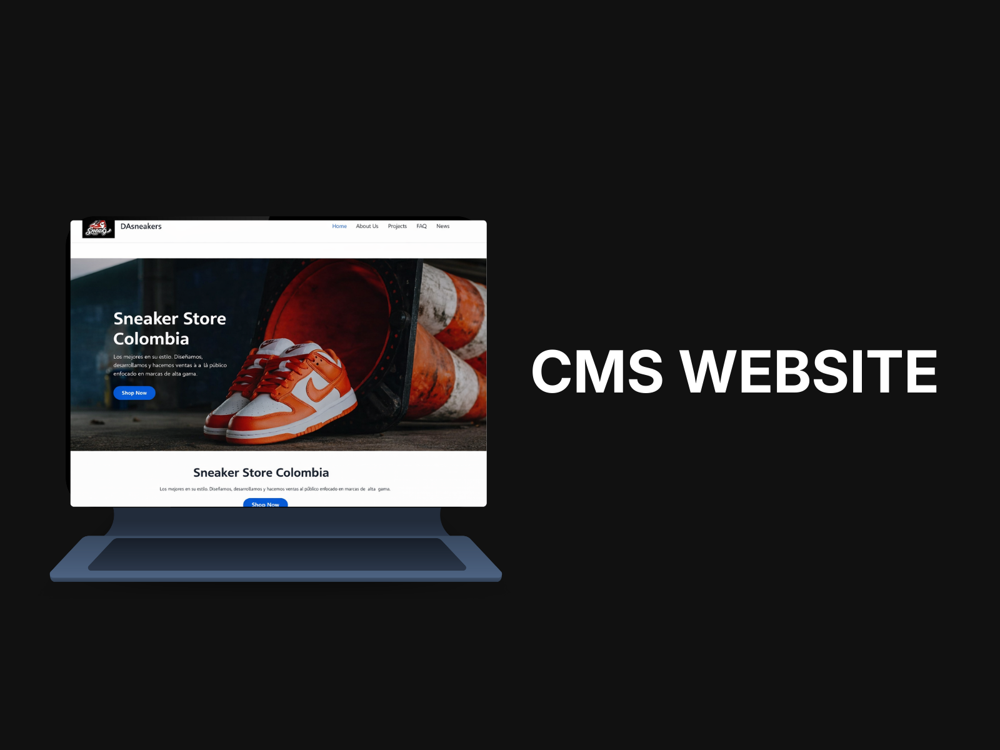
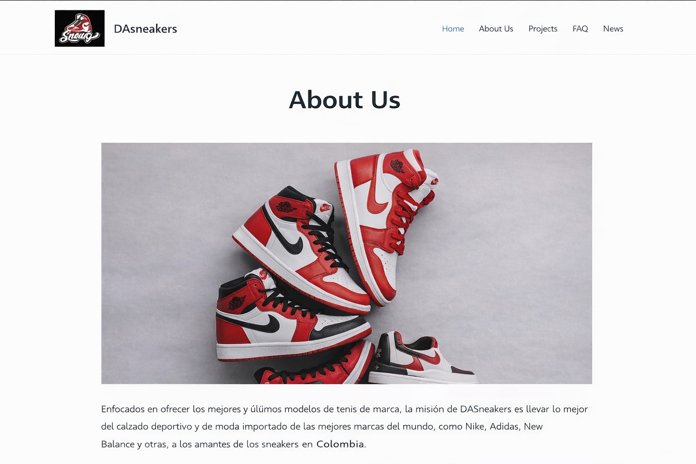
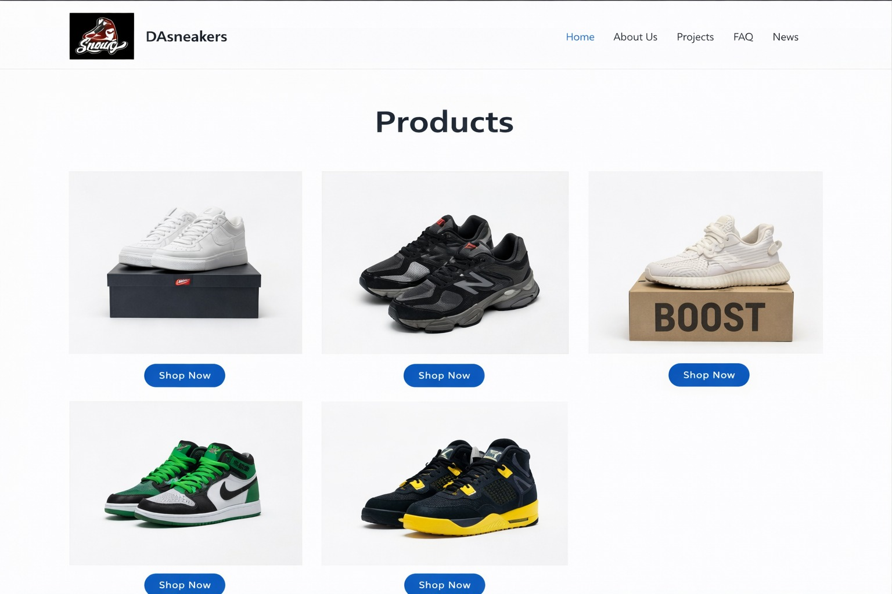
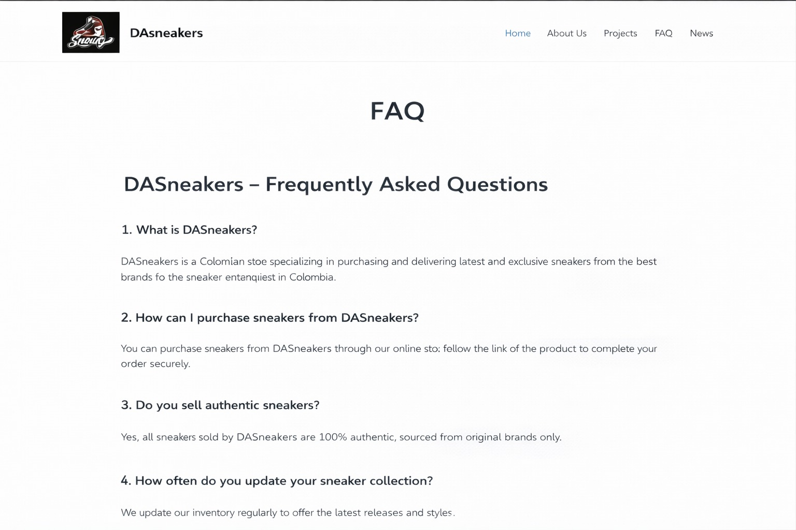
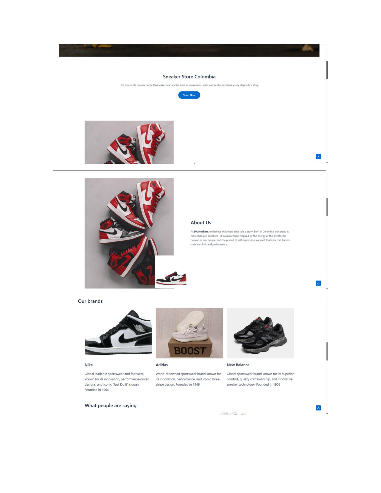
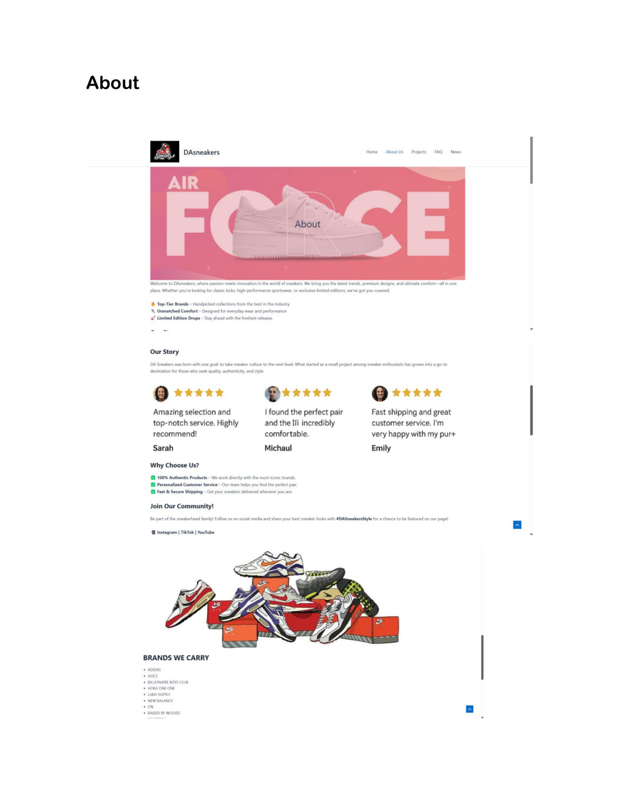

← Back to selected work
CMS Website · WordPress
Sneaker Store Colombia
UX/UI Designer and CMS developer for a responsive sneaker-store website created in WordPress.

A WordPress CMS built around product discovery.
This project used WordPress as a content management system with a clear navigation structure, reusable content areas and product-focused layouts that could be managed without editing code.
Key pages



Long-form CMS page views


CMS decisions
Consistent navigation, a grid-based product experience and reusable page structures supported scalable content management.